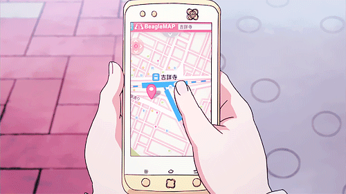

Home
Maps
Food
Activities
Itinerary
GPS! 
Google Maps for Activities/Food Venues, and Hotels:
Hotels:
Durrës:
Palace Hotel & Spa
Sarandë:
Toer Hotel & Spa
Tirana:
White Crown Hotel
Activities:
In the cities and surrounding areas
Durrës:
Mount Dajti National Park
Dajti Ekspres
Sarandë
Lëkurësi Castle
Tirana:
Pyramid of Tirana
Restaurants:
Durrës:
Restorant Piceri 'hysi'
Restaurant Delfini, Durrës
Alternative Food
Sarandë:
Asi Rooftop Resto Lounge
The Meat House Saranda
Manxurane Restaurant
Corfu:
Avli Restaurant Corfu
Grill Giorgos Loukas
Mona Lisa'L Aterlier Del Gelato
Tirana:
Restorant Piceri Era
Arber 32
Dajti's Balcony (Summit of Mouth Dajti)